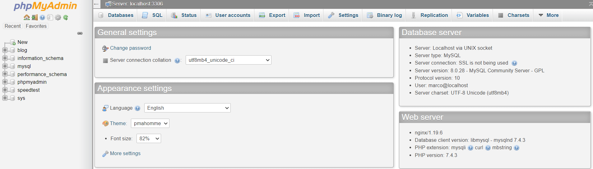

安装 phpMyAdmin 管理 MySQL
phpMyAdmin 是一个 php 的免费工具，用来在 web 端管理 MySQL 数据库。它支持大部分的 MySQL 功能，比如：创建数据库，修改数据，管理用户权限，导入导出数据等。
官方网站：https://www.phpmyadmin.net/
GitHub 主页：https://github.com/phpmyadmin/phpmyadmin
下面介绍在 Ubuntu 20.04 的安装及使用过程。
安装
首先确保已经安装好了 MySQL 和 php：
apt install mysql-server php php-fpm php-mysql
然后安装 phpMyAdmin：
apt install phpmyadmin
安装过程中会提示创建一个 mysql 管理账户 phpmyadmin，一般直接确认即可，然后设置账户密码。如果这一步跳过了创建账户，后期需要手动修改配置文件或手动创建一个 phpmyadmin 管理账户，否则登录可能会报错。
配置 nginx
安装完成后需要配置代理服务器，我使用的是 nginx，下面是 nginx 的配置文件部分：
location /phpmyadmin {
root /usr/share/;
index index.php index.html index.htm;
location ~ ^/phpmyadmin/(.+\.php)$ {
fastcgi_pass unix:/run/php/php7.4-fpm.sock;
include fastcgi-php.conf;
}
}使用
配置完成后就可以登陆 phpmyadmin 页面了，登录对应的 mysql 管理账户，可以是安装 phpmyadmin 时创建的账户也可以是我们之前使用 mysql 自己的账户：

如果登录后发现下面有报错信息：
Access denied for user 'phpmyadmin'@'localhost' (using password: NO)
可能就是安装的时候跳过了创建 phpmyadmin MySQL 账户的步骤，这里我们可以在终端手动创建报错信息中提示的用户名或者直接修改配置文件中定义的 phpmyadmin 管理账户。
修改 /etc/phpmyadmin/config.inc.php，找到如下字段：
$cfg['Servers'][$i]['controluser'] = 'user';
$cfg['Servers'][$i]['controlpass'] = 'password';将上面的用户名密码修改为 MySQL 中存在的账户即可。刷新页面之后应该就没有报错了。
手动创建 MySQL 用户可以参考教程：https://blog.niekun.net/archives/23.html#title-3
然后我们就可以正常使用 phpmyadmin 管理页面了，这里可以查看 database，导入导出数据等。
参考链接
标签：无